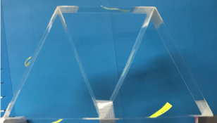
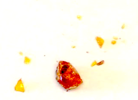

Graduate Student Teacher
Boston University College of Engineering
-
I TA'ed for a 12 week long summer session of EK301, Statics I. Due to the pandemic, the class was entirely taught online (Zoom,
Blackboard, Piazza, Gradescope).
-
I coordinated individual pickup of lab materials, and assigned students to lab groups based on timezone, geography and stated preferences.
-
I regularly updated the Blackboard portal with assignments, solutions, and project related information, and graded all assignments through Gradescope.
-
My twice weekly office hours involved homework help, answering general questions, and debugged student-written MATLAB programs used to evaluate their
mini-truss project designs (cost estimate, max. dead load, load to cost ratio).
|

Model Truss
(Click Image to See Project)
|
Research Assistant
Vassar College Department of Chemistry
-
I was a research assistant for the Vassar College Chemistry Department. This position involved multiple areas of research.
-
I analyzed chemical composition of amber samples using GCMS and FTIR spectroscopy, and compared results with the in-house database.
I organized amber inventory, compiled data in Excel, and wrote reports for publication.
-
I conducted a literature review on and multiple hands-on experiments with poly(benzoyl anhydride) synthesis.
This involved analysis of the resulting compounds using NMR spectroscopy.
|

Amber Sample
(Click Image to See Publication)
|